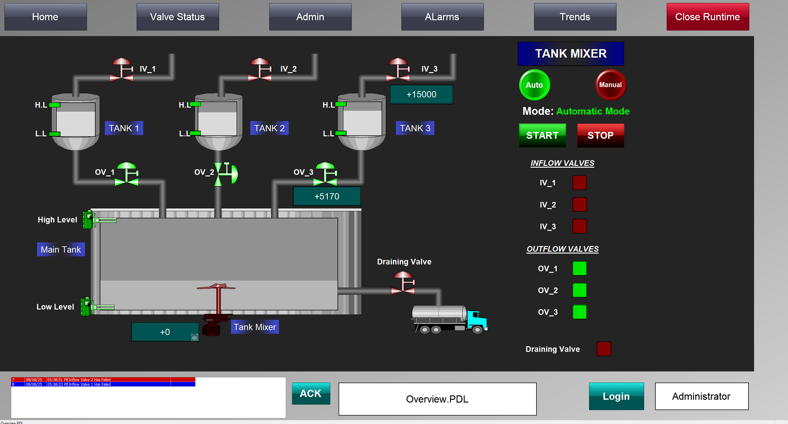
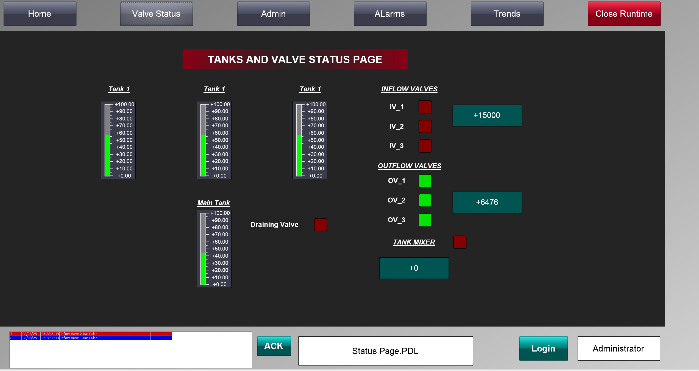
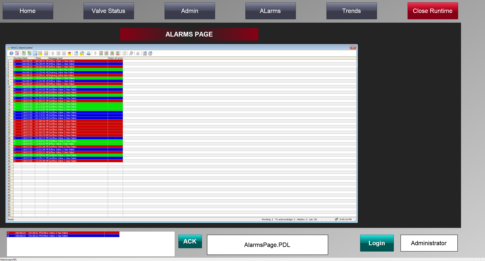
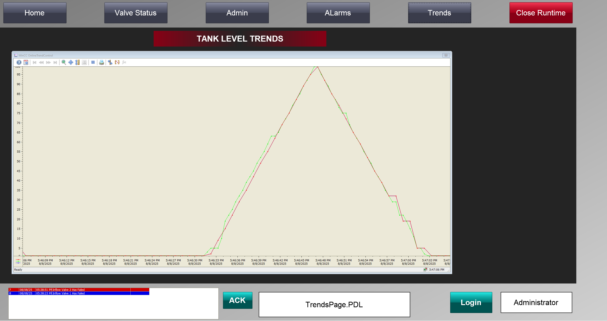

download all the Project Files below. Extract Files and open them on TIA Portal
SCADA PAGES BREAKDOWN

This snippet shows the home page. In this page the operator can start and stop the sytem, he can also select the operation mode(either Automatic or Manual Mode). This page has 3 small tanks and one main tank. Each of the 3 tanks has inflow valves and outflow valves. The main tank has a mixer motor and a draining valve. Each tank has both a high and a low level sensor.

This snippet shows the valve status page. In this page the operator can view the status of all the inflow valves, outflow valves, and draining valve. They can also view the tank behaviour during the filling process. All the 4 tanks are displayed in this page, and all the timers used are also displayed in this page.

This image shows the alarms page. This page displays all the alarms incase any valve fails.

This snippet Shows the trends page. The trend lines represent the process of fillng the 4 tanks. When filling the tanks, the trend line rises and when draining the tanks, the trend line falls.

This snippet shows the administration page. The page can only be accesed by the administrator. In this page, the administrator can add new users, edit existing users and delete existing users.The users have various functions and authorization in our project. The administrator can also view the system info, priview reports and print reports.